没想到之前的写的练习心得得到了老师的认可，看来我要更加认真努力练习了。今天来练习第 22、27、ASM 这三课的 Sample。
尝试使用 Facebook ReDex 库来优化我们的安装包。
准备工作
首先是下载 ReDex：
git clone https://github.com/facebook/redex.gitcd redex接着是安装：
autoreconf -ivf && ./configure && make -j4sudo make install在安装时执行到这里，报出下图错误：
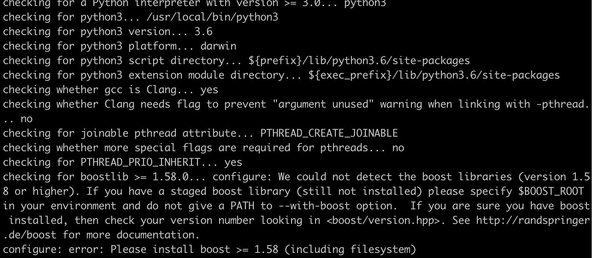
其实就是没有安装 Boost，所以执行下面的命令安装它。
brew install boost jsoncpp安装 Boost 完成后，再等待十几分钟时间安装 ReDex。
下来就是编译我们的 Sample，得到的安装包信息如下。
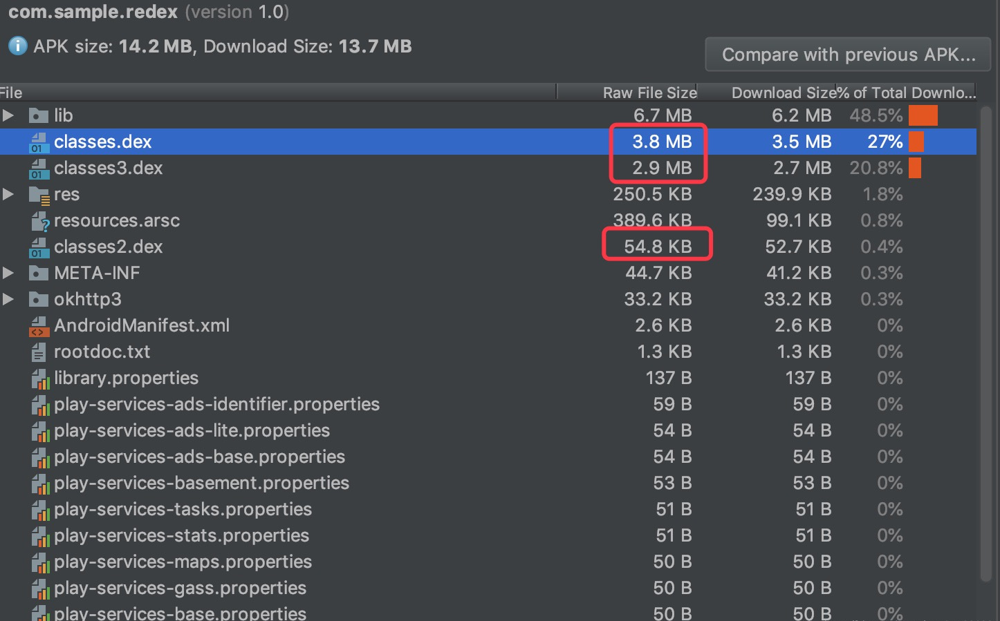
可以看到有三个 Dex 文件，APK 大小为 13.7MB。
通过 ReDex 命令优化
为了让我们可以更加清楚流程，你可以输出 ReDex 的日志。
export TRACE=2去除 Debuginfo 的方法，需要在项目根目录执行：
redex --sign -s ReDexSample/keystore/debug.keystore -a androiddebugkey -p android -c redex-test/stripdebuginfo.config -P ReDexSample/proguard-rules.pro -o redex-test/strip_output.apk ReDexSample/build/outputs/apk/debug/ReDexSample-debug.apk上面这段很长的命令，其实可以拆解为几部分：
-
--sign签名信息 -
-s（keystore）签名文件路径 -
-a（keyalias）签名的别名 -
-p（keypass）签名的密码 -
-c指定 ReDex 的配置文件路径 -
-PProGuard 规则文件路径 -
-o输出的文件路径 -
最后是要处理 APK 文件的路径
但在使用时，我遇到了下图的问题：
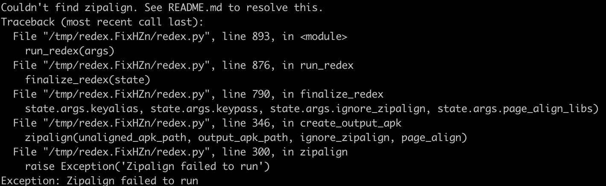
这里是找不到Zipalign，所以需要我们配置 Android SDK 的根目录路径，添加在原命令前面：
ANDROID_SDK=/path/to/android/sdk redex [... arguments ...]结果如下：
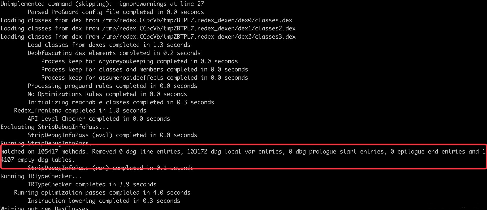
实际的优化效果是，原 Debug 包为 14.21MB，去除 Debuginfo 的方法后为 12.91MB，效果还是不错的。去除的内容就是一些调试信息及堆栈行号。
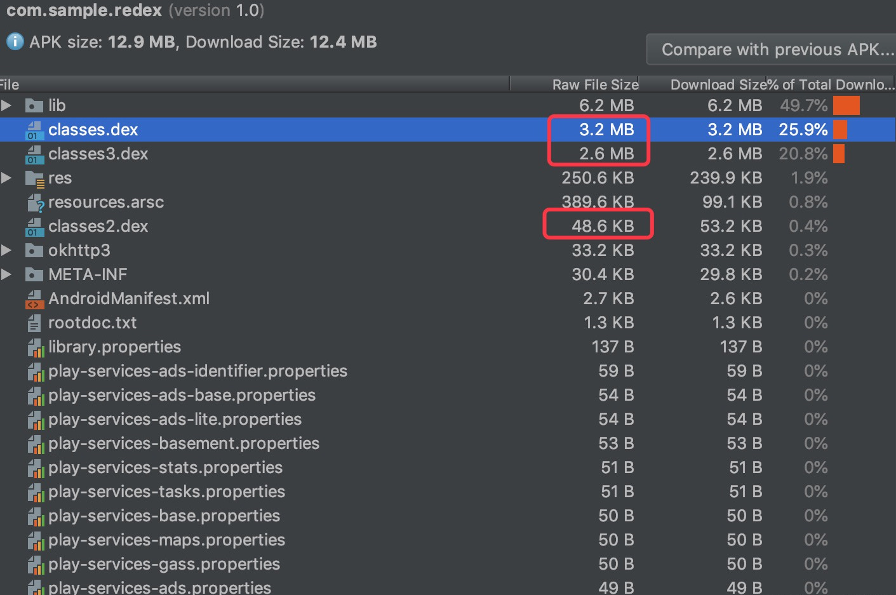
不过老师在 Sample 的 proguard-rules.pro 中添加了-keepattributes SourceFile,LineNumberTable保留了行号信息。
所以处理后的包安装后进入首页，还是可以看到堆栈信息的行号。
Dex 重分包的方法
redex --sign -s ReDexSample/keystore/debug.keystore -a androiddebugkey -p android -c redex-test/interdex.config -P ReDexSample/proguard-rules.pro -o redex-test/interdex_output.apk ReDexSample/build/outputs/apk/debug/ReDexSample-debug.apk和之前的命令一样，只是-c使用的配置文件为 interdex.config。
输出信息：
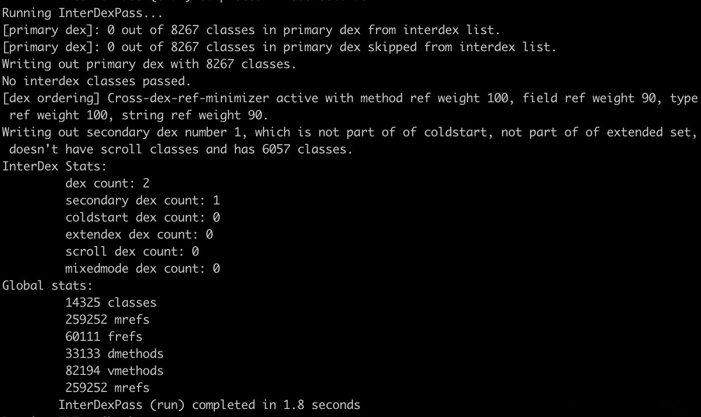
优化效果为，原 Debug 包为 14.21MB、3 个 Dex，优化后为 13.34MB、2 个 Dex。
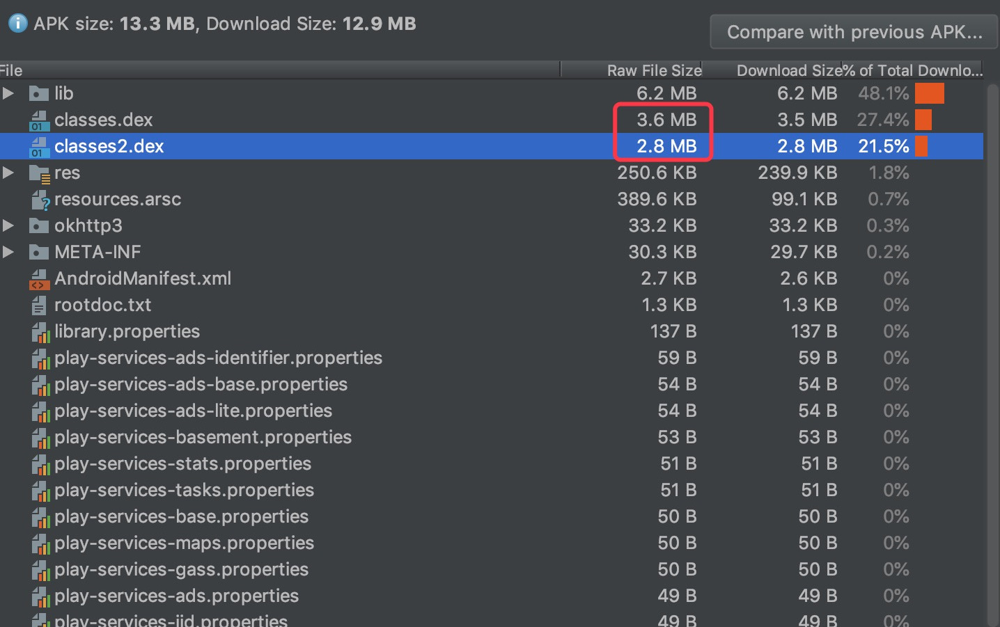
根据老师的介绍，如果你的应用有 4 个以上的 Dex，这个体积优化至少有 10%。 看来效果还是很棒棒的。至于其他问题，比如在 Windows 环境使用 ReDex，可以参看 ReDex 的使用文档。
利用 AspectJ 实现插桩的例子。
效果和Chapter07是一样的，只是 Chapter07 使用的是 ASM 方式实现的，这次是 AspectJ 实现。ASM 与 AspectJ 都是 Java 字节码处理框架，相比较来说 AspectJ 使用更加简单，同样的功能实现只需下面这点代码，但是 ASM 比 AspectJ 更加高效和灵活。
AspectJ 实现代码：
@Aspectpublic class TraceTagAspectj { @TargetApi(Build.VERSION_CODES.JELLY_BEAN_MR2) @Before("execution(* **(..))") public void before(JoinPoint joinPoint) { Trace.beginSection(joinPoint.getSignature().toString()); } /** * hook method when it's called out. */ @TargetApi(Build.VERSION_CODES.JELLY_BEAN_MR2) @After("execution(* **(..))") public void after() { Trace.endSection(); }简单介绍下上面代码的意思：
-
@Aspect：在编译时 AspectJ 会查找被@Aspect注解的类，然后执行我们的 AOP 实现。 -
@Before：可以简单理解为方法执行前。 -
@After：可以简单理解为方法执行后。 -
execution：方法执行。 -
* **(..)：第一个星号代表任意返回类型，第二个星号代表任意类，第三个代表任意方法，括号内为方法参数无限制。星号和括号内都是可以替换为具体值，比如 String TestClass.test(String)。
知道了相关注解的含义，那么实现的代码含义就是，所有方法在执行前后插入相应指定操作。
效果对比如下：
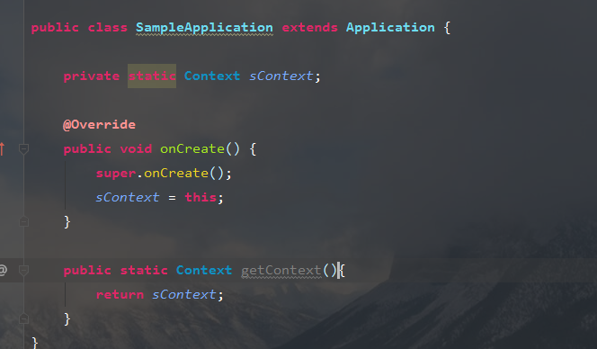
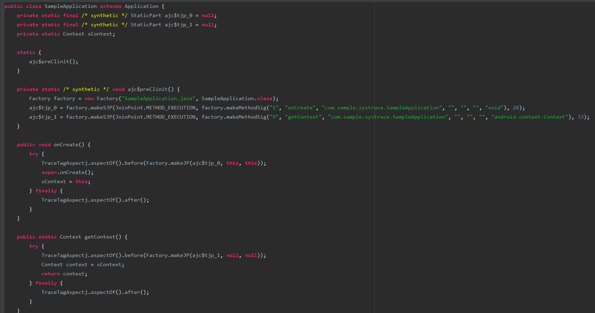
下来实现给 MainActivity 的onResume方法增加 try catch。
@Aspectpublic class TryCatchAspect { @Pointcut("execution(* com.sample.systrace.MainActivity.onResume())") // <- 指定类与方法 public void methodTryCatch() { } @Around("methodTryCatch()") public void aroundTryJoinPoint(ProceedingJoinPoint joinPoint) throws Throwable { // try catch try { joinPoint.proceed(); // <- 调用原方法 } catch (Exception e) { e.printStackTrace(); } }}上面用到了两个新注解：
-
@Around：用于替换以前的代码，使用 joinPoint.proceed() 可以调用原方法。 -
@Pointcut：指定一个切入点。
实现就是指定一个切入点，利用替换原方法的思路包裹一层 try catch。
效果对比如下：
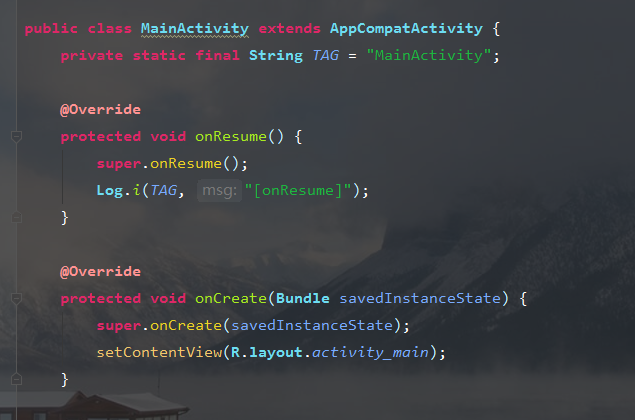
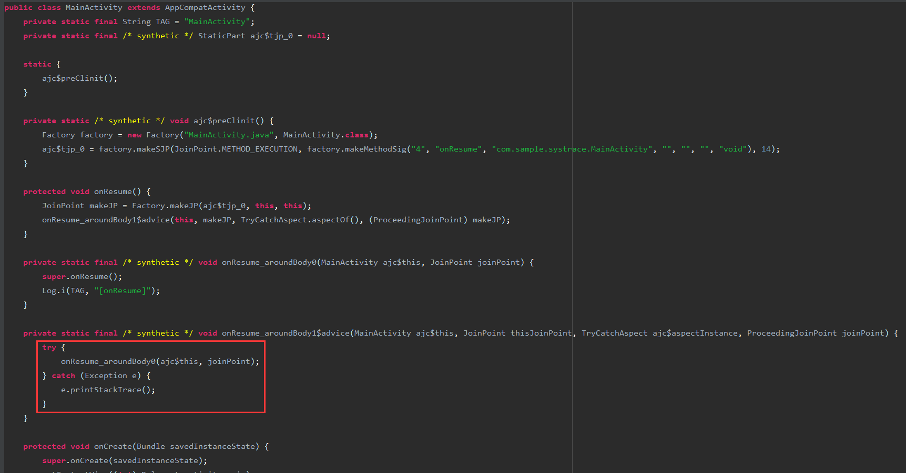
当然 AspectJ 还有很多用法，Sample 中包含有《AspectJ 程序设计指南》，便于我们具体了解和学习 AspectJ。
Sample 利用 ASM 实现了统计方法耗时和替换项目中所有的 new Thread。
-
运行项目首先要注掉 ASMSample build.gradle 的
apply plugin: 'com.geektime.asm-plugin'和根目录 build.gradle 的classpath ("com.geektime.asm:asm-gradle-plugin:1.0") { changing = true }。 -
运行
gradle task ":asm-gradle-plugin:buildAndPublishToLocalMaven"编译 plugin 插件，编译的插件在本地.m2\repository目录下 -
打开第一步注掉的内容就可以运行了。
实现的大致过程是，先利用 Transform 遍历所有文件，再通过 ASM 的visitMethod遍历所有方法，最后通过 AdviceAdapter 实现最终的修改字节码。具体实现可以看代码和《练习 Sample 跑起来 | ASM 插桩强化练习》。
效果对比：
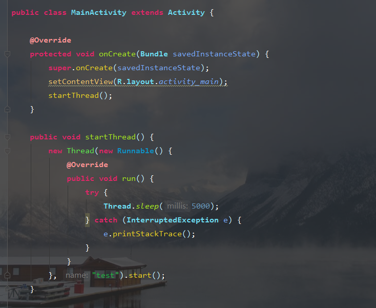
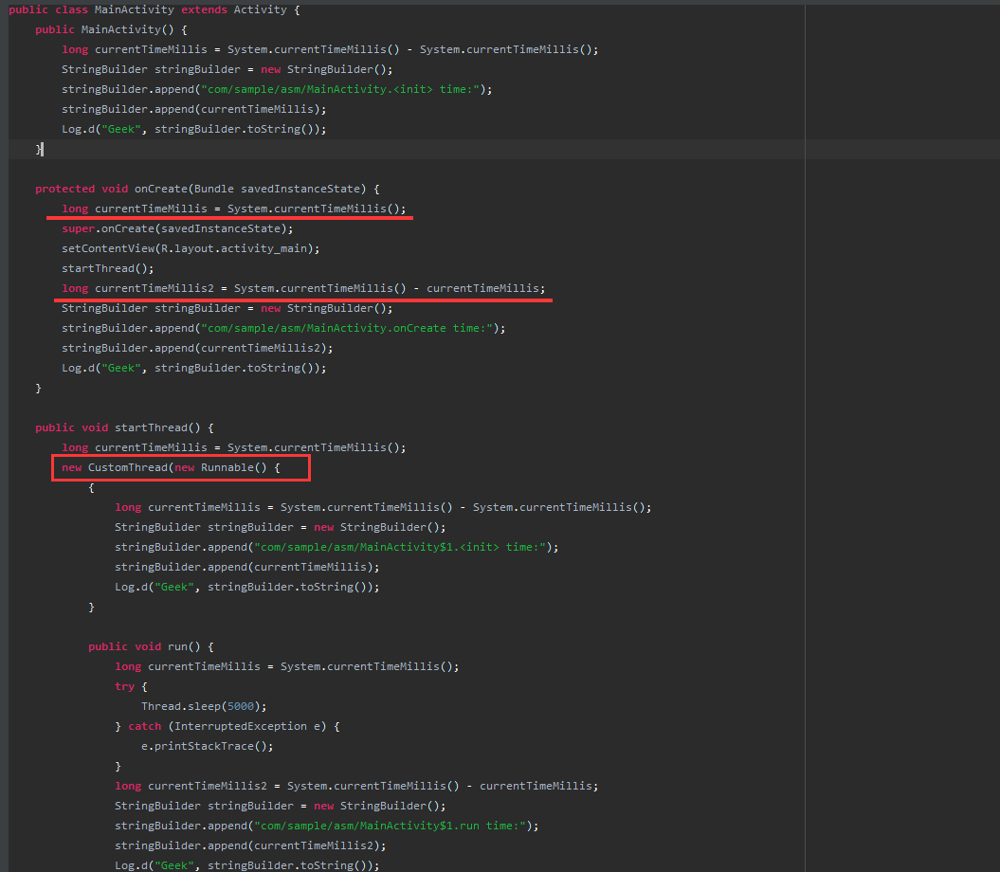
下面是两个练习：
1. 给某个方法增加 try catch
这里我就给 MainActivity 的mm方法进行 try catch。实现很简单，直接修改 ASMCode 的 TraceMethodAdapter。
public static class TraceMethodAdapter extends AdviceAdapter { private final String methodName; private final String className; private final Label tryStart = new Label(); private final Label tryEnd = new Label(); private final Label catchStart = new Label(); private final Label catchEnd = new Label(); protected TraceMethodAdapter(int api, MethodVisitor mv, int access, String name, String desc, String className) { super(api, mv, access, name, desc); this.className = className; this.methodName = name; } @Override protected void onMethodEnter() { if (className.equals("com/sample/asm/MainActivity") && methodName.equals("mm")) { mv.visitTryCatchBlock(tryStart, tryEnd, catchStart, "java/lang/Exception"); mv.visitLabel(tryStart); } } @Override protected void onMethodExit(int opcode) { if (className.equals("com/sample/asm/MainActivity") && methodName.equals("mm")) { mv.visitLabel(tryEnd); mv.visitJumpInsn(GOTO, catchEnd); mv.visitLabel(catchStart); mv.visitMethodInsn(Opcodes.INVOKEVIRTUAL, "java/lang/RuntimeException", "printStackTrace", "()V", false); mv.visitInsn(Opcodes.RETURN); mv.visitLabel(catchEnd); } }visitTryCatchBlock方法：前三个参数均是 Label 实例，其中一、二表示 try 块的范围，三则是 catch 块的开始位置，第四个参数是异常类型。其他的方法及参数就不细说了，具体你可以参考ASM 文档。
实现类似 AspectJ，在方法执行开始及结束时插入我们的代码。
效果我就不截图了，代码如下：
public void mm() { try { A a = new A(new B(2)); } catch (Exception e) { e.printStackTrace(); } }2. 查看代码中谁获取了 IMEI
这个就更简单了，直接寻找谁使用了 TelephonyManager 的getDeviceId方法，并且在 Sample 中有答案。
public class IMEIMethodAdapter extends AdviceAdapter { private final String methodName; private final String className; protected IMEIMethodAdapter(int api, MethodVisitor mv, int access, String name, String desc, String className) { super(api, mv, access, name, desc); this.className = className; this.methodName = name; } @Override public void visitMethodInsn(int opcode, String owner, String name, String desc, boolean itf) { super.visitMethodInsn(opcode, owner, name, desc, itf); if (owner.equals("android/telephony/TelephonyManager") && name.equals("getDeviceId") && desc.equals("()Ljava/lang/String;")) { Log.e("asmcode", "get imei className:%s, method:%s, name:%s", className, methodName, name); } }}Build 后输出如下：
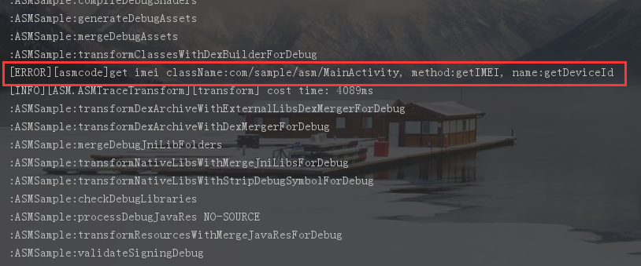
总体来说 ASM 的上手难度还是高于 AspectJ，需要我们了解编译后的字节码，这里所使用的功能也只是冰山一角。课代表鹏飞同学推荐的 ASM Bytecode Outline 插件是个好帮手！最后我将我练习的代码也上传到了GitHub，里面还包括一份中文版的 ASM 文档，有兴趣的同学可以下载看看。
参考
COMMUNITY NOTES
读者评论
试了下Redex去除Dex文件Debuginfo行号信息的功能，发现行号由正确的com.sample.redex.MainActivity.onCreate(MainActivity.java:20)变为不正确的com.sample.redex.MainActivity.onCreate(Unknown Source:13)，并没有像支付宝所说的变成-1